Origem
Os cursos de costura do SENAI surgiram na década de 1940 para atender à rápida industrialização do Brasil, capacitando profissionais para a crescente indústria têxtil. O que começou como um treinamento operacional nas fábricas evoluiu para formações técnicas completas, integrando tecnologia, modelagem e gestão de produção de alto padrão.
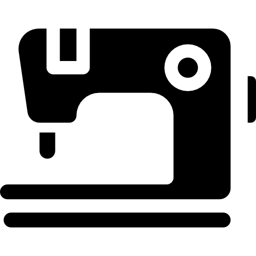
Sobre nós
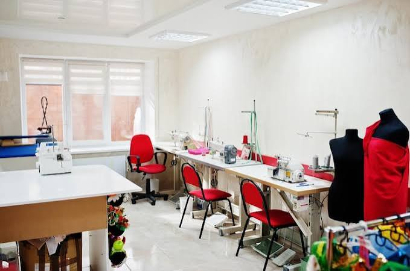
Nossa instituição é referência em excelência educacional. Com infraestrutura de ponta e metodologias inovadoras.
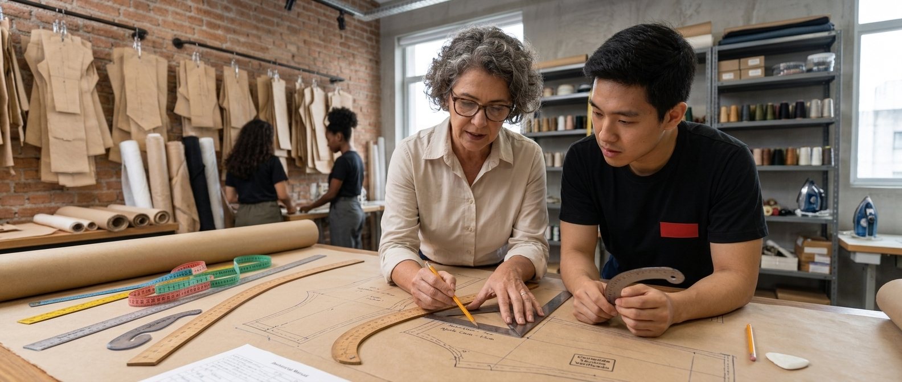
Compromisso absoluto com o seu aprendizado, garantindo que toda a técnica, teoria e prática prometida seja entregue com máxima dedicação.
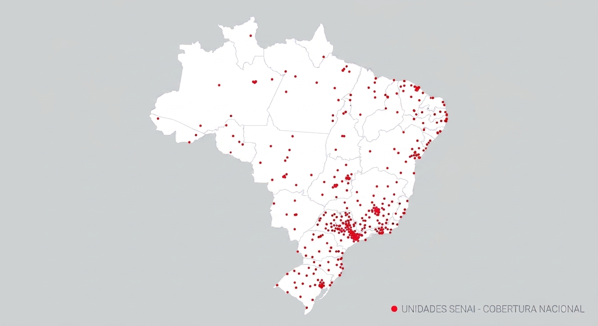
Uma formação com peso em todo o país. Nossos certificados abrem portas em todo o território nacional.
Cursos Disponiveis
Assistente de Modelagem Industrial
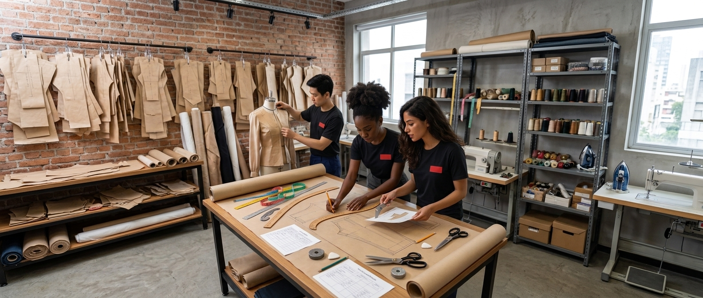
Aprenda a auxiliar na interpretação de fichas técnicas e na construção de moldes em escala para a produção em massa.
Costureiro sob medida
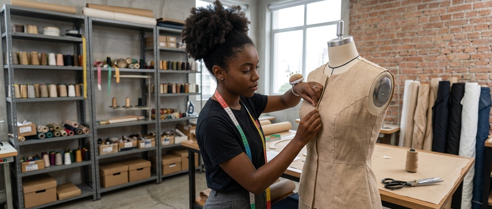
Domine as técnicas de medição, corte e montagem para criar peças exclusivas com o caimento perfeito para cada cliente.
Corte e costura sob medida
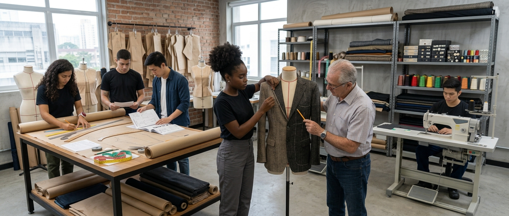
Desenvolva habilidades completas e precisas de corte e costura de alta qualidade para confeccionar roupas personalizadas.
Costureiro máquina reta e overloque
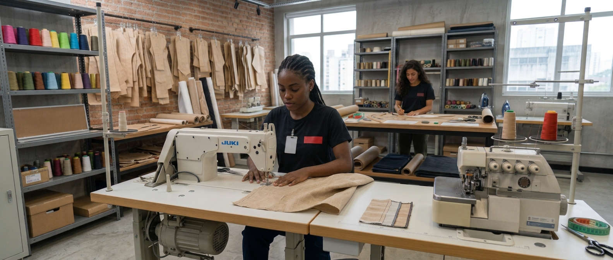
Capacite-se na operação profissional destas máquinas essenciais, garantindo velocidade, fechamento e acabamento impecáveis.
Adaptação de modelagem de blusas
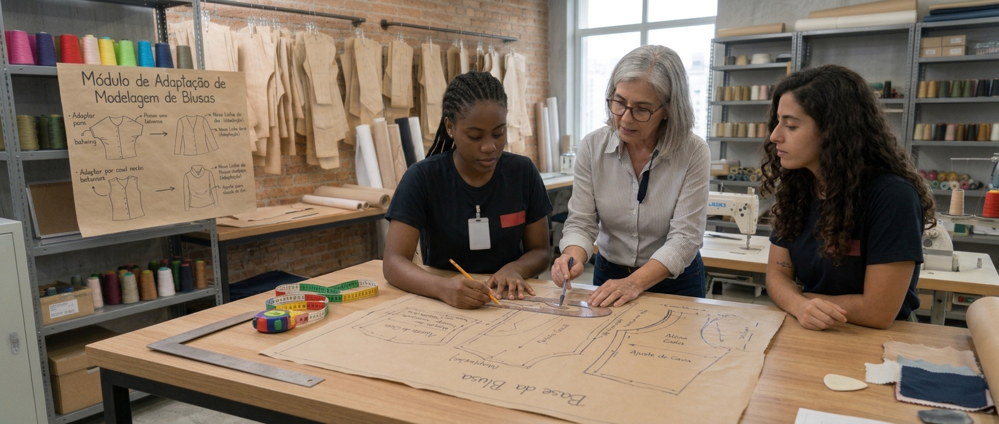
Especialize-se em ajustar, modificar e criar variações de bases de blusas, atendendo a diferentes estilos e silhuetas.
Adaptação de modelagem de saias
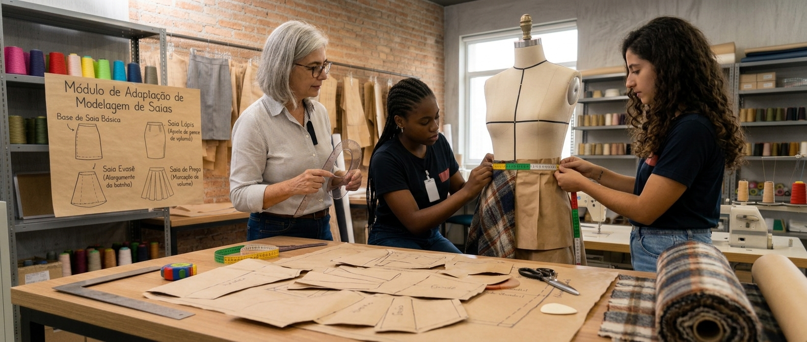
Aprenda técnicas avançadas de interpretação e alteração de bases de saias para criar designs únicos e modernos.
Modelista de roupas
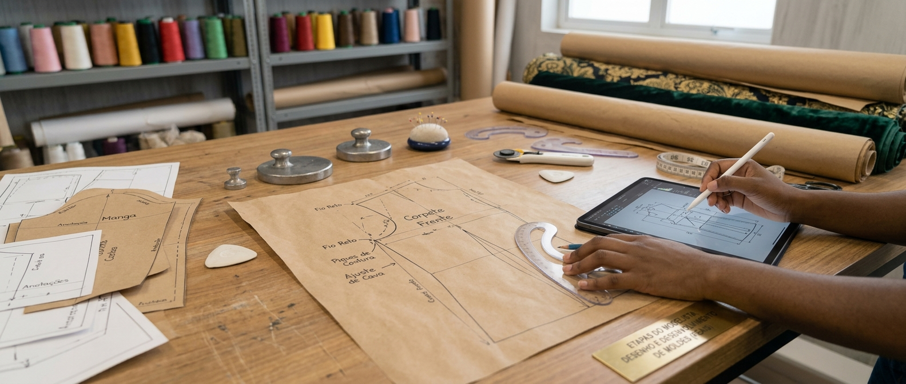
Torne-se um especialista na criação de moldes completos a partir de desenhos de moda, unindo criatividade e precisão matemática.